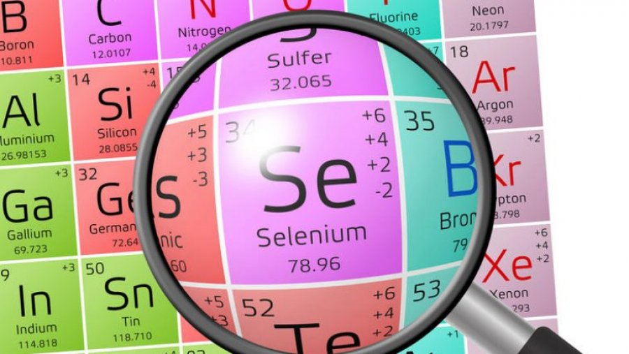
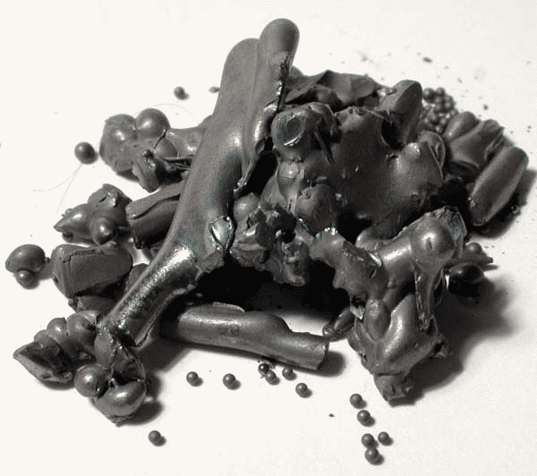

Селен
Селе́н (химический символ — Se, от лат. Selenium) — химический элемент 16-й группы (по устаревшей классификации — главной подгруппы шестой группы, VIA), четвёртого периода периодической системы химических элементов Д. И. Менделеева, с атомным номером 34.Простое вещество селен — это хрупкий, блестящий на изломе неметалл серого цвета (данный цвет обусловлен устойчивой аллотропной модификацией, неустойчивые аллотропные модификации придают селену различные оттенки красного цвета).

Открыт новый элемент был в начале XIX века известным шведским химиком Берцелиусом. Занимаясь исследованиями способов получения серной кислоты, он обратил внимание на осадок, который образовывался в кислоте. По мнению коллег, в осадке присутствовал теллур, на наличие которого указывал специфический запах. Но при тщательном изучении, никакого теллура обнаружено не было. Ученый понял, что имеет дело с неизвестным до этого времени веществом, который по своим свойствам очень похож на теллур. Чтобы подчеркнуть это сходство, он решил назвать элемент селеном (Луна на греческом), так как теллур — это производное от названия Земли на латыни.
Основной источник получения селена – шламы медеэлектролитные и сернокислотного производства, из которых гидрометаллургическими методами извлекают селен; его рафинируют перекристаллизацией, перегонкой в вакууме, гидридным и другими методами. Объём мирового производства селена около 2000 т/год (2015).

Вещество содержится в почвах, во многих растениях, в организме животных и человека. Получают элемент, большей частью, из отходов медно-электролитических производств и предприятий по производству серной кислоты.